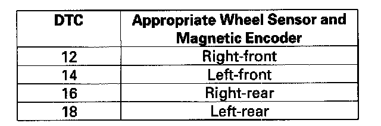

DTC 12
DTC 12, 14, 16, 18: Wheel Sensor (Electrical Noise/intermittent Interruption)NOTE:
^ If the ABS and other indicators come on because of electrical noise, the indicators will go off when you test-drive the vehicle speed at 10 mph (15 km/h) or more and the noise is gone.
^ An incorrectly installed wheel bearing can cause one of these DTCs.
1. Turn the ignition switch OFF.
2. Check the appropriate wheel sensor and inspect the magnetic encoder on the appropriate hub bearing for debris.

Are they installed correctly in good condition, and free of debris?
YES-Go to step 3.
NO-Reinstall or replace the appropriate wheel sensor, hub bearing unit, and recheck by test driving.
3. Substitute an appropriate known-good wheel sensor.
4. Turn the ignition switch ON (II).
5. Clear the DTC with the HDS.
6. Test-drive the vehicle at 10 mph (15 km/h) or more.
7. Check for DTCs with the HDS.
Is DTC 12, 14, 16, and/or 18 indicated?
YES-Go to step 8.
NO-Replace the original wheel sensor.
8. Turn the ignition switch OFF.
9. Substitute an appropriate known-good hub bearing unit.
10. Turn the ignition switch ON (II).
11. Clear the DTC with the HDS.
12. Test-drive the vehicle at 10 mph (15 km/h) or more.
13. Check for DTCs with the HDS.
Is DTC 12, 14, 16, and/or 18 indicated?
YES-Check for loose terminals in the VSA modulator-control unit 46P connector. Check for a loose connection at G303. If necessary, substitute a known-good VSA modulator-control unit and retest.
NO-Replace the original hub bearing unit:
^ Front: Replace the original front hub bearing unit.
^ Rear: Replace the original rear hub bearing unit.